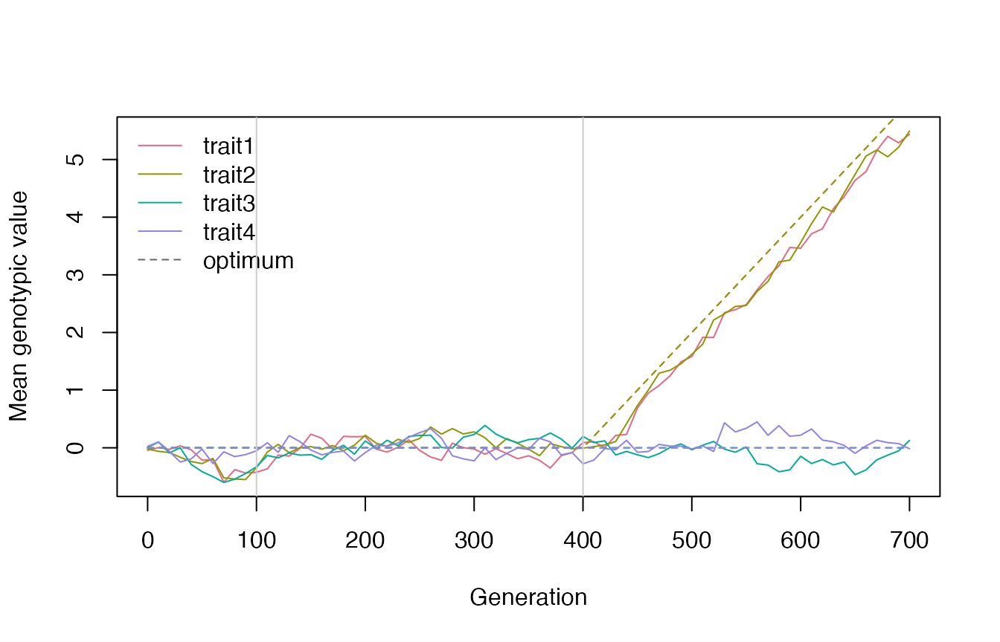
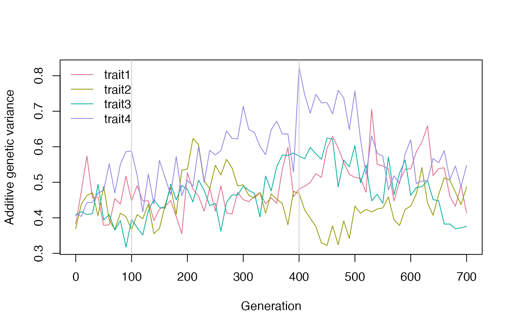
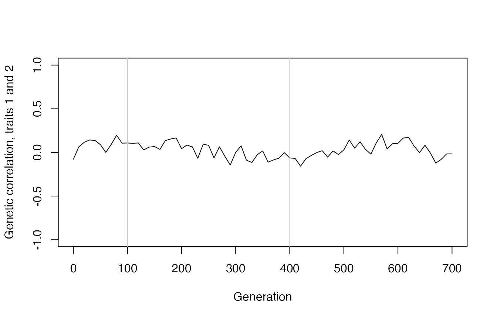

evomod2 simulates populations of diploid individuals whose multivariate phenotypes evolve under drift and Gaussian selection. Every simulation has the same three ingredients:
- a model: genetic architecture, mutation, recombination and environmental noise;
- a list of selection regimes;
- a call to
evolve(), which returns a population with statistics recorded along the way.
This vignette walks through each one with small, fast simulations.
The other vignettes compare genetic architectures
(vignette("architectures")) and reproduce the simulations
of Melo & Marroig (2015)
(vignette("melo-marroig-2015")).
Models
A genetic architecture says how genomes map to genotypic values
x. In the additive architecture, each
allele carries an effect vector with one value per trait, and
x is the sum of the effect vectors of all alleles. Mutation
adds a multivariate normal vector to an allele’s effects.
model <- evomod_model(
architecture = additive(loci = 20, traits = 4),
mutation = mutation(rate = 0.005, cov = 0.1), # cov: sd 0.1 per trait, uncorrelated
env_sd = 0.8, # phenotype z = x + Normal(0, 0.8^2)
init_sd = 0.1 # starting allelic effects
)
model
#> <evomod model>
#> architecture: additive - 20 loci, 4 traits
#> mutation: rate 0.005 per allele, random walk
#> recombination: free
#> life cycle: wright_fisher
#> env_sd: 0.8 init_sd: 0.1Generations are discrete by default;
life_cycle = moran() gives overlapping generations, where
each generation is n birth-death events (see
?life_cycles). Other architectures are
binary_b(), the binary ontogenetic matrix of the original
evomod model (with binary_b_mutation()), and
multilinear(), pairwise multilinear epistasis (see
?architectures). Loci recombine freely unless the model has
a genetic map (?recombination).
Selection regimes
Fitness is Gaussian around an optimum theta, with
covariance omega (larger omega means weaker
selection):
omega <- diag(10, 4)
regimes <- list(
drift(100), # no selection
stabilizing(300, omega = omega), # fixed optimum
directional(300, delta_theta = c(0.02, 0.02, 0, 0), omega = omega) # moving optimum
)directional() moves the optimum by
delta_theta every generation; here traits 1 and 2 are
pushed up while traits 3 and 4 stay put. fluctuating()
makes the optimum jump up or down every few generations, for all traits
together, independently, or in blocks (as in do O & Whitlock
2023):
fluctuating(5000, every = 10, step = 0.2, omega = 1, structure = list(1:2, 3:4))
#> <evomod regime> fluctuating for 5000 generationsRunning a simulation
pop <- evolve(model, regimes, n = 300, record_every = 10, seed = 1)
pop
#> <evomod population> 300 individuals at generation 700
#> architecture: additive - 20 loci, 4 traits
#> regimes: drift (100), stabilizing (300), directional (300)
#> records: 71 generationsStatistics are recorded every record_every
generations:
head(trait_means(pop))
#> generation trait mean_x mean_z theta
#> 1 0 trait1 -0.042971769 -0.0563562556 0
#> 2 0 trait2 -0.022712704 -0.0391483171 0
#> 3 0 trait3 0.008942121 -0.0153788330 0
#> 4 0 trait4 0.024249932 0.0858234510 0
#> 5 10 trait1 0.004493161 0.0004336258 0
#> 6 10 trait2 -0.061181608 -0.0014832862 0
tail(variances(pop))
#> generation trait G P h2
#> 279 690 trait3 0.3717994 0.9405393 0.3953045
#> 280 690 trait4 0.4871923 1.0276138 0.4741006
#> 281 700 trait1 0.4140055 1.0076001 0.4108828
#> 282 700 trait2 0.4869124 1.2187075 0.3995318
#> 283 700 trait3 0.3761608 0.9690206 0.3881866
#> 284 700 trait4 0.5476366 1.2227502 0.4478728
g_matrices(pop)[["700"]]
#> trait1 trait2 trait3 trait4
#> trait1 0.414005526 -0.007438328 0.02785657 0.103344112
#> trait2 -0.007438328 0.486912444 -0.10005839 0.008561561
#> trait3 0.027856569 -0.100058389 0.37616079 0.023234865
#> trait4 0.103344112 0.008561561 0.02323486 0.547636554plot() shows mean genotypic values against the optimum,
additive variances, or a genetic correlation (grey lines mark the regime
boundaries):
plot(pop)
plot(pop, "variances")

Continuing a population
evolve() also takes a population and continues it: same
individuals, generation count, optimum and records.
pop <- evolve(pop, stabilizing(200, omega = omega))
pop
#> <evomod population> 300 individuals at generation 900
#> architecture: additive - 20 loci, 4 traits
#> regimes: drift (100), stabilizing (300), directional (300), stabilizing (200)
#> records: 91 generationsRuns are reproducible: random numbers come from R’s generator, so the
same seed (or set.seed()) gives the same
result, and continuing a population in two steps gives the same result
as running it in one.
Genomes and G matrix statistics
The current genomes are available as an array (rows x alleles x
individuals; alleles 2l - 1 and 2l are the two
copies of locus l):
For architectures where genotypic values are sums of allele effects, G splits into a genic part (expected without linkage disequilibrium) and a linkage disequilibrium part:
dec <- g_decomposition(pop)
round(dec$genic, 3)
#> trait1 trait2 trait3 trait4
#> trait1 0.409 0.012 0.022 0.102
#> trait2 0.012 0.400 -0.113 -0.013
#> trait3 0.022 -0.113 0.442 0.012
#> trait4 0.102 -0.013 0.012 0.640
round(dec$ld, 3)
#> trait1 trait2 trait3 trait4
#> trait1 -0.029 -0.022 0.018 0.035
#> trait2 -0.022 -0.001 0.015 -0.073
#> trait3 0.018 0.015 -0.067 0.028
#> trait4 0.035 -0.073 0.028 -0.008Matrix statistics for modularity and evolvability:
G <- dec$G
avg_corr(G, modules = list(1:2, 3:4)) # within- and between-module correlations
#> $within
#> [1] -0.02605202 0.08265489
#>
#> $between
#> [1] -0.009818828
#>
#> $avg_ratio
#> [1] -2.882364
autonomy(G, c(1, 1, 0, 0)) # autonomy in the direction of module 1
#> [1] 0.980875
mean_autonomy(G) # mean over random directions
#> [1] 0.9137727
eigen_variance(G) # proportion of variance per eigenvector
#> [1] 0.4095508 0.2504928 0.1902026 0.1497538Larger simulations
The examples in
system.file("examples", package = "evomod2") run larger,
replicated experiments from the command line, one replicate per process,
so they can run in parallel:
list.files(system.file("examples", package = "evomod2"))
#> [1] "corridor_linkage.R" "corridor_selection.R"
#> [3] "fluctuating_environments.R" "jones_burger_arnold_2014.R"
#> [5] "melo_marroig_2015.R"